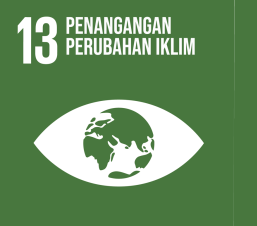

Tentang Kami : Misi Solar Stem dalam Meretas Masa Depan Energi Bersih
Selamat datang di Solar Stem, portal informasi yang didedikasikan untuk
menggali potensi energi matahari
sebagai solusi terdepan menuju masa depan yang berkelanjutan. Kami adalah tim yang memiliki tekad kuat
untuk memberikan wawasan mendalam tentang penggunaan energi surya, serta mengupas tuntas dampak positifnya
terhadap lingkungan dan keberlanjutan planet kita.
Permasalahan Energi Fosil dan Keterlibatan Kami
Energi fosil telah menjadi tulang punggung ekonomi global selama beberapa dekade,
namun, pemanfaatannya telah memberikan dampak serius terhadap lingkungan dan kesehatan manusia. Perubahan
iklim yang semakin terasa, pencemaran udara, dan degradasi lingkungan adalah beberapa dari banyak
konsekuensi negatif yang dapat diidentifikasi. Tim Solar Stem memahami bahwa untuk menciptakan dunia yang
lebih baik, perlu adanya langkah-langkah konkret menuju sumber daya energi yang bersih dan berkelanjutan.
Kaitan dengan Tujuan Pembangunan Berkelanjutan (SDGs)


Komitmen kami terhadap perubahan positif tercermin dalam keselarasan misi Solar Stem
dengan Tujuan Pembangunan Berkelanjutan (SDGs). Kami memiliki keyakinan bahwa energi surya bukan hanya sebagai
alternatif yang ramah lingkungan, tetapi juga sebagai kunci untuk mencapai beberapa SDGs, seperti mengatasi
perubahan iklim (SDG 13), memastikan ketersediaan air bersih dan sanitasi (SDG 6), dan menjamin akses energi
yang terjangkau, andal, berkelanjutan, dan modern untuk semua lapisan masyarakat (SDG 7).
Mengapa Kami Membuat SolarSTEM?
SolarSTEM lahir dari kepedulian mendalam terhadap kerusakan yang ditimbulkan oleh
penggunaan berlebihan energi fosil. Kami menyadari bahwa transformasi ke arah energi bersih bukanlah
pilihan, melainkan sebuah kebutuhan mendesak. Kami ingin memberikan platform yang informatif dan edukatif
untuk memotivasi individu, perusahaan, dan pemerintah untuk beralih ke energi surya sebagai solusi yang
berkelanjutan.
Tim SolarSTEM : Menghadirkan Kepemimpinan
dan Kepedulian
Tim di balik SolarSTEM terdiri dari individu yang memiliki latar belakang yang beragam
namun memiliki satu tujuan bersama: perubahan positif dalam dunia energi. Kami
bersatu untuk
menyebarkan kesadaran dan pengetahuan tentang pentingnya mengadopsi energi surya. Setiap anggota tim memiliki
kepedulian mendalam terhadap lingkungan dan memahami bahwa upaya kolektif adalah kunci untuk mencapai
perubahan nyata.
Bergabunglah dengan kami di Solar Stem dalam perjalanan menuju transformasi energi
yang ramah lingkungan dan berkelanjutan. Bersama-sama, kita dapat membentuk masa depan yang lebih cerah dan
berdaya, tanpa mengorbankan keberlanjutan planet yang kita cintai.